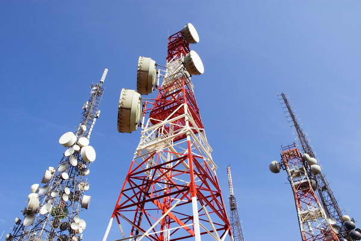

CURSOS DICTADOS POR EL DOCENTE
|  |
INTRODUCCION A LA TEORIA DE LAS TELECOMUNICACIONES El curso busca brindar conocimientos teóricos y prácticos básicos sobre la transmisión de información, a través de diversos medios de comunicación. Se da énfasis en la modulación, como uno de los aspectos más importantes de los sistemas de transmisión, ya sea de señales analógicas como digitales. |